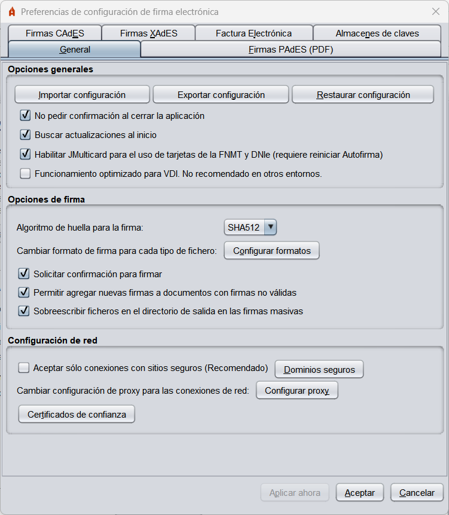
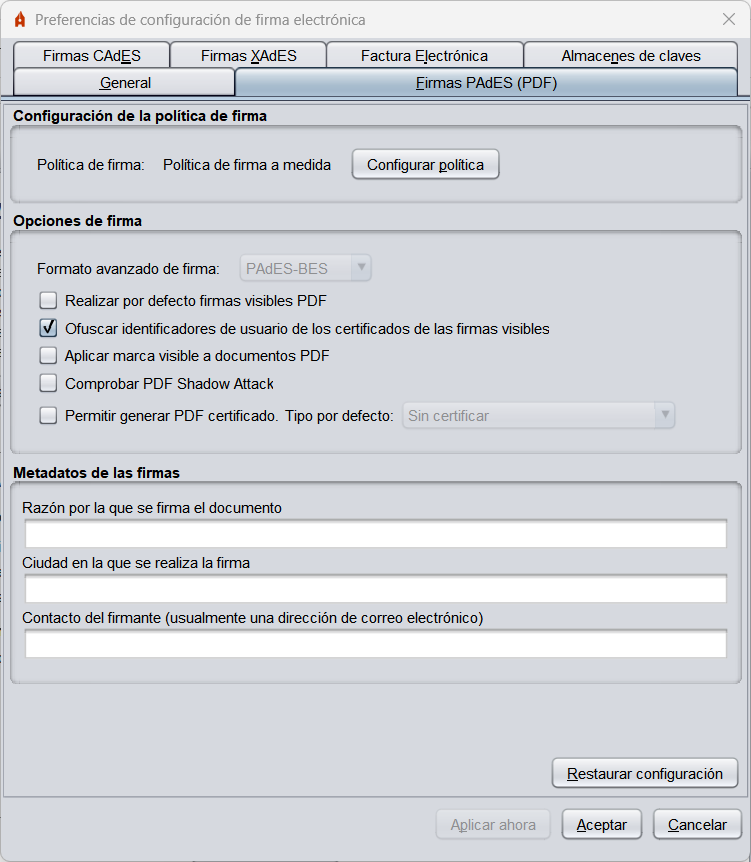
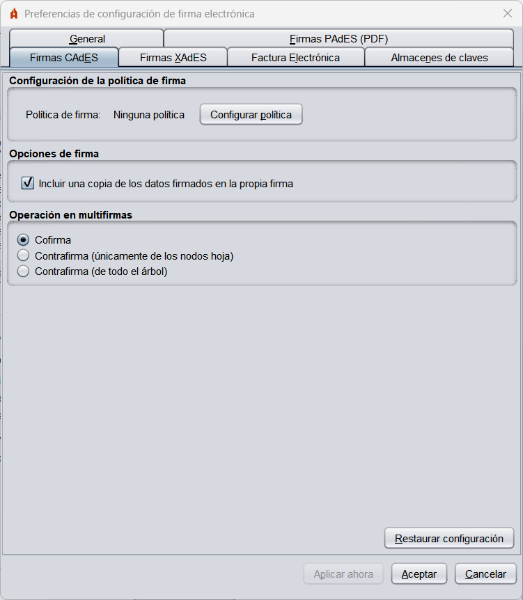
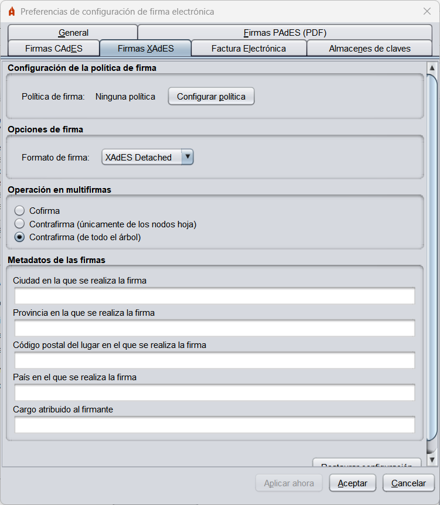
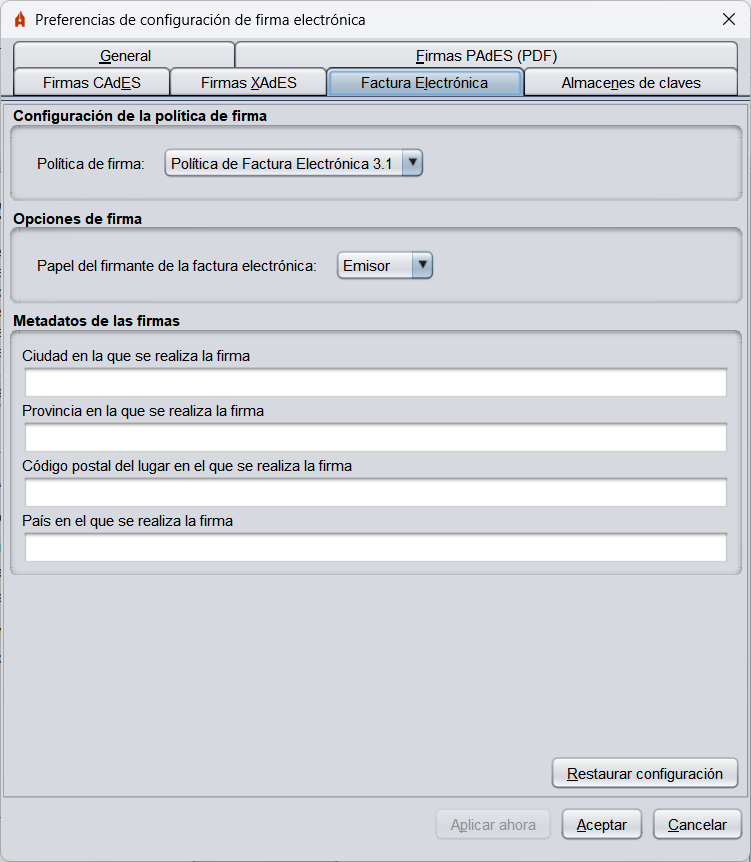
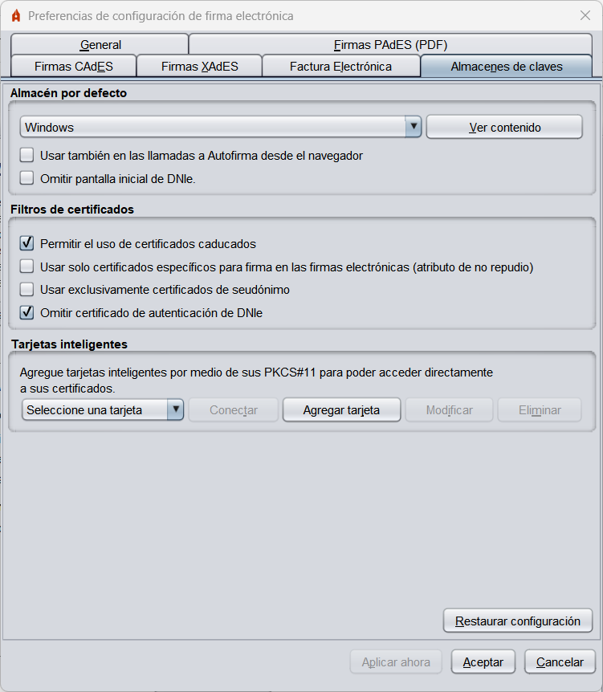

Menú Preferencias
Para configurar las firmas generadas por la herramienta, acceda al menú de configuración a través de la
opción "Herramientas" -> "Preferencias" en la barra de menús de la aplicación. Desde este menú
puede configurar el comportamiento general de la aplicación y las firmas generadas para cada tipo de formato.
Si pulsa en el botón "Cancelar" desde cualquier de las pestañas del menú, se cerrará este ignorando
cualquier cambio realizado; si se pulsa el botón "Aceptar" se cerrará el menú dejando configuradas
las opciones definidas en el menú y si se pulsa el botón "Aplicar ahora", se aplicarán los cambios
realizados sin cerrar el menú.
Menú "General"

- Opciones generales:
- Importar configuración general de la aplicación: Opción para importar un fichero de la configuración proporcionado por un administrador.
- Restaurar configuración general de la aplicación: Opción para restaurar la configuración por defecto de la aplicación.
- No pedir confirmación al cerrar la aplicación: Permite salir de la aplicación sin confirmación del usuario.
- Buscar actualizaciones al inicio: Permite configurar si se deben búscar si hay actualizaciones disponibles al iniciar la aplicacion.
- Habilitar JMulticard para el uso de las tarjetas de la FNMT y DNIe: Sólo en Windows y Linux. Configura si debe utilizarse el controlador integrado en Autofirma para el uso de las tarjetas de FNMT y DNIe. En caso de desactivarse, se utilizarán los controladores encontrados en el sistema. El uso de esta función permite usar las tarjetas compatibles cuando el usuario no tiene instalado su controlador o existe alguna incompatibilidad con él. Esta función puede ocasionar que se solicite al usuario múltiples veces la inserción del PIN de la tarjeta en procesos de firma masiva. Esta configuración no tendrá efecto hasta la próxima vez que se abra la aplicación.
- Funcionamiento optimizado para VDI: Sólo en Windows. Configura la comunicación por WebScokets con el navegador de tal modo que se evitarán bloqueos cuando se utilice Autofirma en un entorno VDI. Sin embargo, esta configuración ralentiza la comunicación cuando la cantidad de datos a transmitir es grande, por lo que no se recomienda en otros entornos.
- Opciones de firma:
- Algoritmo de firma: Algoritmo de firma por defecto que utiliza la aplicación para generar las firmas electrónicas.
- Formatos de firma: Configura qué formato de firma debe aplicarse cuando se proporciona determinado tipo de documento. Al pulsar el botón
"Configurar formatos" se muestra un diálogo con los tipos de documento para los que se puede configurar un formato de firma específico:
- Documentos PDF
- Documentos OOXML de Microsoft Office
- Facturas electrónicas
- Ficheros XML genéricos
- Ficheros ODF de LibreOffice u OpenOffice
- Resto de ficheros
Cualquiera de estos tipos de fichero pueden firmarse con los formatos CAdES y XAdES (acordes a la
configuración establecida en las pestañas correspondientes) y algunos de ellos pueden ser
firmados en formatos específicos.
El tipo de documento "Resto de ficheros" hace referencia a cualquier documento que no
esté en cualquiera de las categorías anteriores.
ADVERTENCIA: No se recomienda que se modifique que las facturas electrónicas se
firmen en un formato distinto al de factura electrónica.
- Solicitar confirmación para firmar:
Cuando está habilitada esta opción se solicita confirmación al usuario antes de firmar.
- Permitir agregar nuevas firmas a documentos con firmas no válidas: Al habilitar esta opción, Autofirma no impedirá agregar nuevas firmas (cofirma o contrafirma) a documentos en los que se encuentre que ya hay firmas y estas no sean válidas (estén corruptas o con certificados caducados).
- Sobreescribir ficheros en el directorio de salida: Opción para configurar si se desea
que, al generar la estructura de directorios de firmas resultante de un proceso de firma masiva, y en caso
de encontrar un fichero con el mismo nombre con el que se va a guardar una firma, se sobreescriba el
fichero preexistente por el nuevo fichero de firma o se guarde la firma utilizando un nuevo nombre.
- Configuración de red:
- Aceptar sólo conexiones con sitios seguros (Recomendado): Si esta opción está activada se
comprobará la confianza del certificado SSL de los sitios web a los que deba conectarse la aplicación. Si se
trabaja en sitios web con un certificado SSL no reconocido, es probable que deba deshabilitar esta opción.
- Configurar proxy: Opción para configurar el proxy para todas las conexiones de red de
Autofirma. Para saber más, consulte la página Configuración del proxy de red.
- Certificados de confianza: Opción para configurar certificados de confianza en conexiones de red. Para saber más, consulte la página Certificados de confianza.
Menú "Firmas PAdES (PDF)"

Menú "Firmas CAdES (binarias)"

Menú "Firmas XAdES (XML)"

- Configuración de la política de firma: Permite declarar la política de firma que se sigue en las firmas XAdES:
Los valores accesibles a través del panel de configuración son:
- Ninguna política: La firmas de XML generadas no declararán política de firma.
- Política de firma de la AGE 1.9: Se declara la política de firma de la AGE v1.9
- Política a medida: Permite configurar manualmente cada una de las propiedades de la política.
- Identificador de la política.
- Huella digital del identificador de la política.
- Algoritmo de huella digital del identificador de la política.
- Calificador de la política
- Opciones de firma:
- Formato de las firmas:
- XAdES Enveloping: Se configura el modo enveloping (la firma envuelve a los datos firmados).
- XAdES Detached: Se configura el modo detached (firma y datos en una super-estructura XML).
- XAdES Enveloped: Se configura el modo enveloped (la firma se inserta dentro de los datos XML).
ADVERTENCIA: La política de firma de la AGE, sólo permite la realización de firmas
en formatos Enveloped e Internally Detached (aquí referida como Detached). Así pues, sólo se podrán configurar
estos formatos de firma cuando se declare la política de firma de la AGE.
- Metadatos de las firmas XAdES:
- Ciudad en la que se realiza la firma: Ciudad en la que se localiza el firmante en el momento de la firma.
- Provincia en la que se realiza la firma: Provincia en la que se localiza el firmante en el momento de la firma.
- Código postal en la que se realiza la firma: Código postal en la que se localiza el firmante en el momento de la firma.
- País en el que se realiza la firma: País la que se localiza el firmante en el momento de la firma.
- Cargo del firmante: Cargo de quien realiza la firma.
Menú "Factura Electrónica"

- Configuración de la política de firma: Permite declarar la versión de la política de firma de Factura electrónica que debe utilizarse.
- Opciones de firma:
- Papel del firmante de la factura electrónica: Permite configurar el rol que desempeña el firmante en el ciclo de vida de la factura.
- Metadatos de las facturas electrónicas:
- Ciudad en la que se realiza la firma: Ciudad en la que se localiza el firmante en el momento de la firma.
- Provincia en la que se realiza la firma: Provincia en la que se localiza el firmante en el momento de la firma.
- Código postal en la que se realiza la firma: Código postal en la que se localiza el firmante en el momento de la firma.
- País en el que se realiza la firma: País la que se localiza el firmante en el momento de la firma.
Menú "Almacenes de claves"

- Almacén por defecto:
- Permite seleccionar el almacén de claves que se cargará por defecto en la interfaz de escritorio.
- Ver contenido: Permite ver los certificados que contiene el almacén seleccionado.
- Usar también en las llamadas de Autofirma desde el navegador: Indica si se desea que el almacén configurado sea el que se cargue por defecto también cuando se llame a Autofirma desde el navegador.
- Filtros de certificados:
- No mostrar la pantalla inicial de DNIe y trabajar siempre con el almacén por defecto: Omite la pantalla inicial al detectar un DNIe y se utilizará el almacén por defecto que esté configurado.
- Permitir el uso de certificados caducados: Al estar habilitada esta opción, los certificados caducados aparecerán en el diálogo de selección de certificados de firma, lo que permitirá firmar con ellos.
- Usar solo certificados específicos para firma en las firmas electrónicas (atributo de no repudio): Si está marcada esta opción, sólo se mostrarán los certificados que declaren específicamente ser de firma.
- Usar exclusivamente certificados de seudónimo cuando están disponibles: Restringe que únicamente se puedan usar certificados de seudónimo cuando estos estén disponibles.
- Omitir certificado de autenticación de DNIe: Oculta el certificado de autenticación incluido en los almacenes de claves para DNIe.
- Tarjetas inteligentes:
- Permite dar de alta tarjetas inteligentes a partir de su controlador PKCS#11 para poder usarlas directamente como un almacén de claves accesible desde el diálogo de seleccín de certificados. Las tarjetas inteligentes agregadas aquí, se podrán configurar como almacenes por defecto en el desplegable del primer apartado.
- Conectar: Realiza una prueba de conexión con el almacén de claves de la tarjeta inteligente seleccionada.
- Agregar tarjeta: Añade una nueva tarjeta inteligente. Se abrirá un diálogo donde introducir un nombre para la tarjeta inteligente y la ruta donde se encuentra su controlador PKCS#11.
- Modificar: Permite modificar el nombre y la ruta del controlador de la tarjeta inteligente seleccionada.
- Eliminar: Elimina la tarjeta inteligente seleccionada en el desplegable.